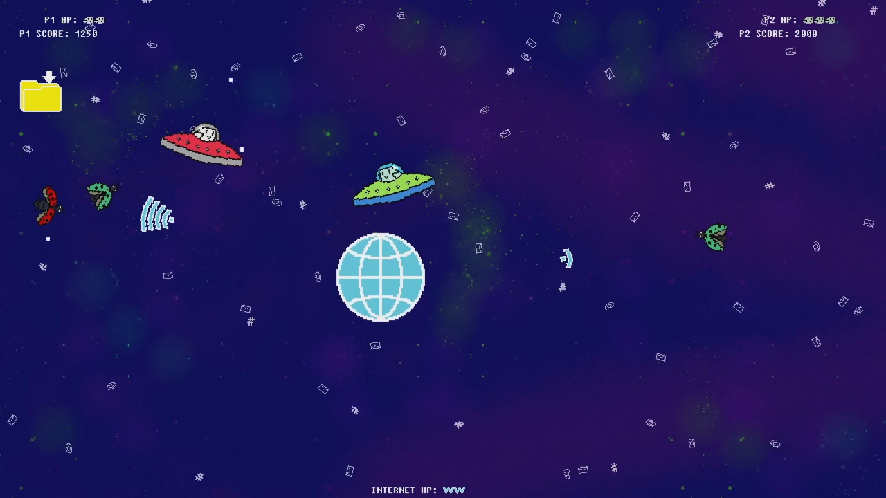
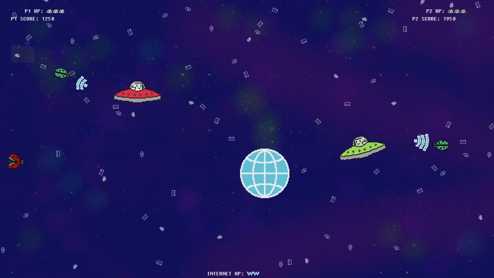
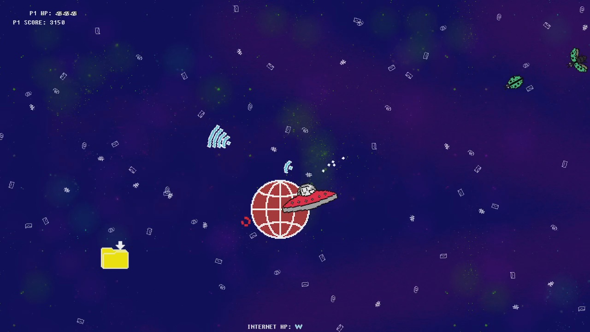
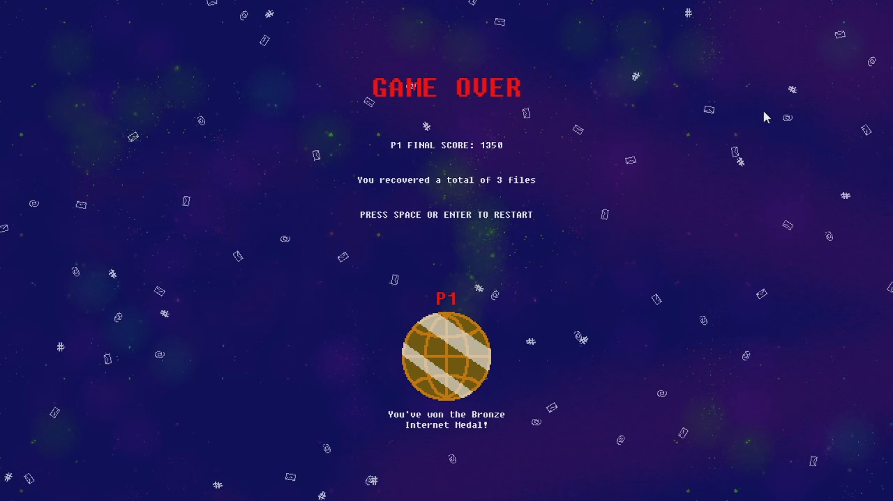
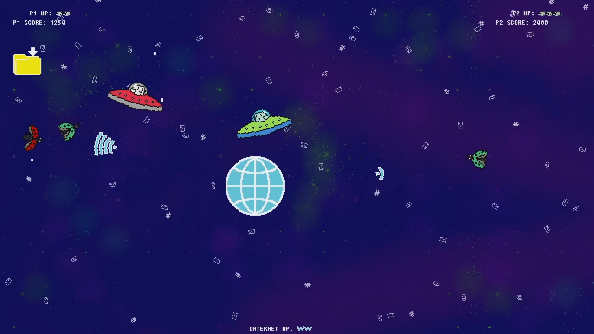
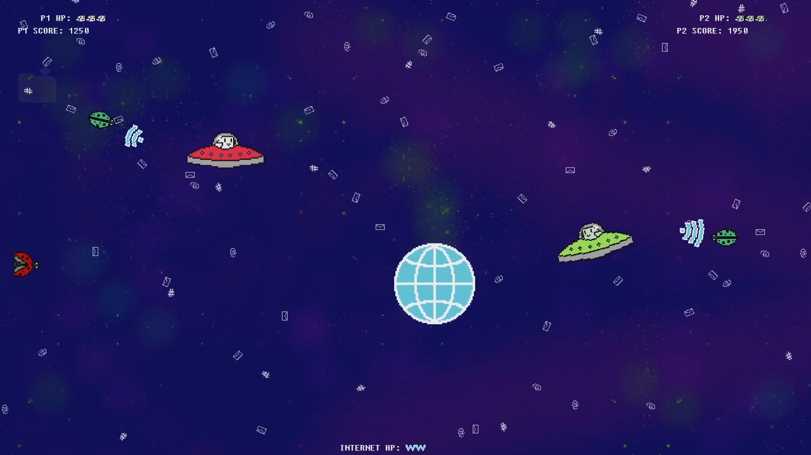
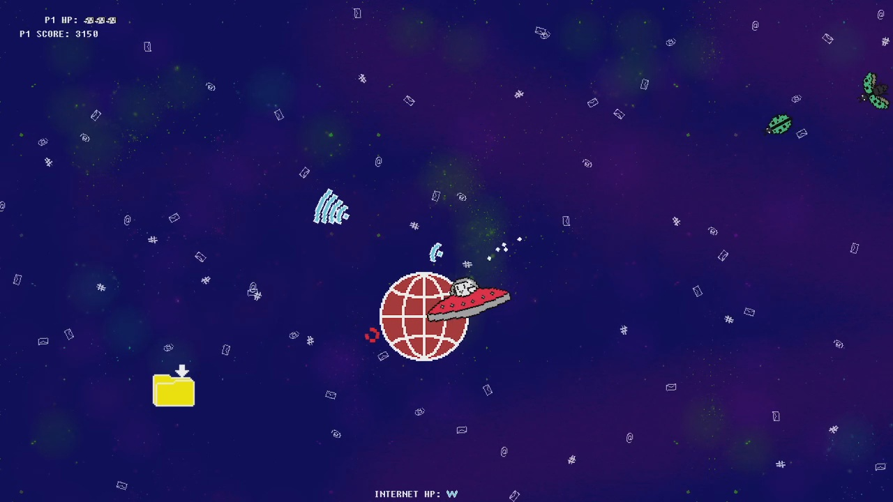
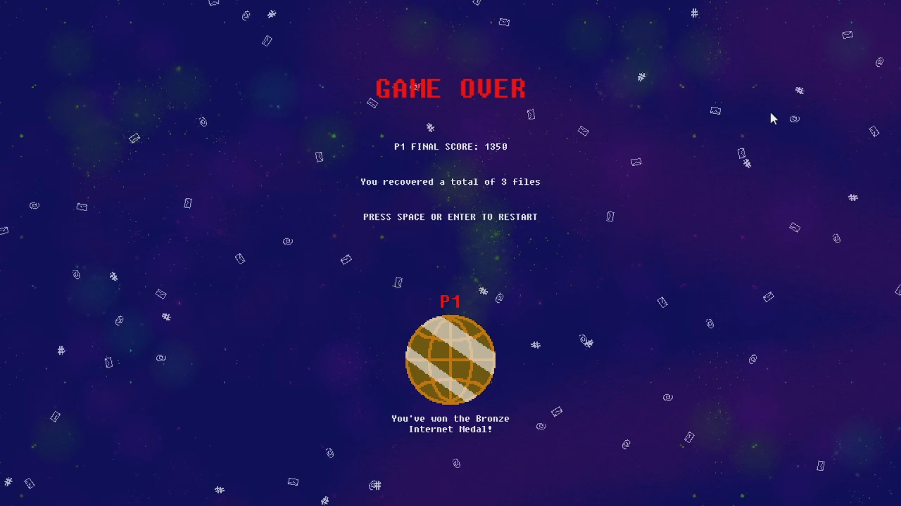
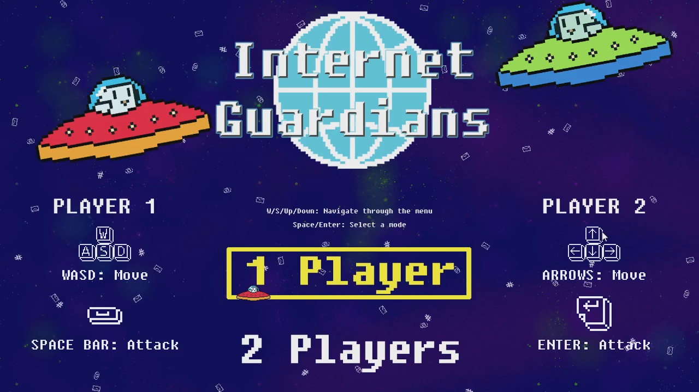
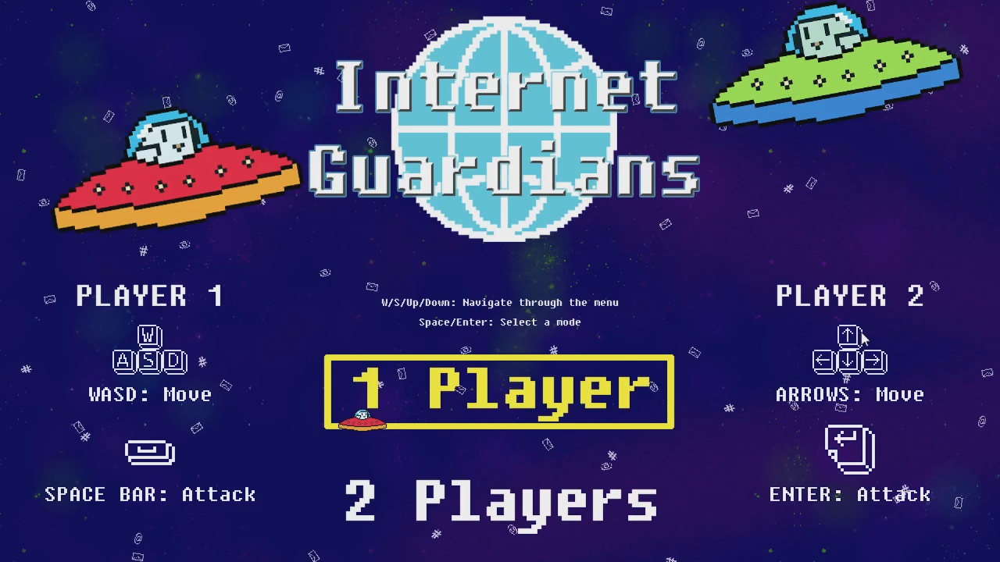

 

About Game
Created for the Opera GX Game Jam held in Game Jolt in August 2021, this game was designed around the theme "UFOs and the Internet" and developed within a two-week time frame. In this game, players embark on a solo adventure or join forces in multiplayer mode, facing the formidable task of safeguarding the Internet from relentless bugs. As the gameplay unfolds, the challenge intensifies with every passing second, creating an adrenaline-pumping experience. Players also have the opportunity to earn coveted medals that serve as a testament to their performance throughout the game.